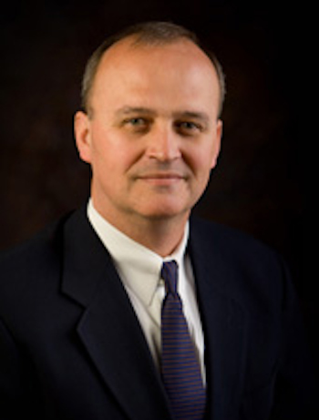

Who We Are
SoftEdge Capital is a merger and acquisition firm specializing in middle-market businesses with revenues of $2 million to $50 million. We assist mid-market business sellers and buyers maximize their value through acquisitions, dispositions, mergers or other strategic alternatives.
Industry Specialists
We specialize in representing buyers and sellers in the following industries:
Professional Services Firms
Financial Services Firms
General Manufacturing Firms
Food Processing and Manufacturing Firms
Principal

Mr. Friedman is a strategy and development professional with over twenty years of experience in the financial services industry. As a strategic consultant, Mr. Friedman has played a leading role in developing new business strategic initiatives primarily at a Fortune 50 company. His financial services expertise includes merger and acquisition, corporate strategy, new distribution channel delivery strategy and implementation, product development, business model design and development and financial and operational strategy and implementation.
He serves as a Managing Principal of SoftEdge Solutions, Inc. a successful consulting firm that focuses on mergers and acquisitions, distribution strategic planning, business start-up strategic consulting, affinity marketing programs, and new product and service development.
Mr. Friedman led the development of the annual strategic planning process at a major financial advisory firm. In addition, he led several key initiatives around field force retention, distribution alliances and new product offerings.
He also led key new business development activities for a Fortune 50 company. This included:
Leading the acquisition process where he was responsible for all aspects of new market expansion and add-on acquisitions
Developing and implementing the product expansion for the Bank Distribution Channel. This included exploring the launch of a new family of mutual funds and the launch of a variable annuity program.
Successfully launching and rolling out the brokerage division and separate account management division. He led many of the financial and operational planning functions along with some product development.
Why SoftEdge Capital?
The professionals at SoftEdge Capital will work with you from start to finish making sure the transaction moves ahead in a smooth and timely manner. We work with you in the following eight phases:
- Strategy session – It’s critical to know from the start what a buyer or seller expects to accomplish. We make sure that all parties understand the desired outcome before we move to the next step.
- Sourcing and identification – Finding just the right buyer or company to acquire is sometimes like trying to find a needle in a haystack. Our goal is to find good companies that meet your parameters that have not been on the market. We bring to you a small number of highly qualified buyers or companies.
- Relationship management – Acquisitions and divestitures often take months to complete. We handle the relationships with the potential buyer or seller so that you can continue to focus on your business.
- Deal construction and negotiations – We have been involved in hundreds of deal constructions and negotiations and bring that expertise to your transaction. Since we know your expectations, we can review all purchase proposals before submitting them to you, thus saving you time.
- Due diligence – While we don’t get involved in the due diligence process, we can provide guidance, checklists and other advice.
- Legal and contract review – We will work closely with your M+A attorney or suggest one that we have closely worked with. While we are not attorneys, we will review all contracts and provide you with our comments.
- Close – We make sure that all of the above are done correctly and there are no hidden “deal breakers” that can stop the transaction from closing.
- Transition and integration – A successful transaction requires a smooth transition and integration. If you are a buyer, we can assist you in developing a comprehensive transition and integration plan.
Get in Touch
If you're interested in working with us, email dennis@softedgecapital.com